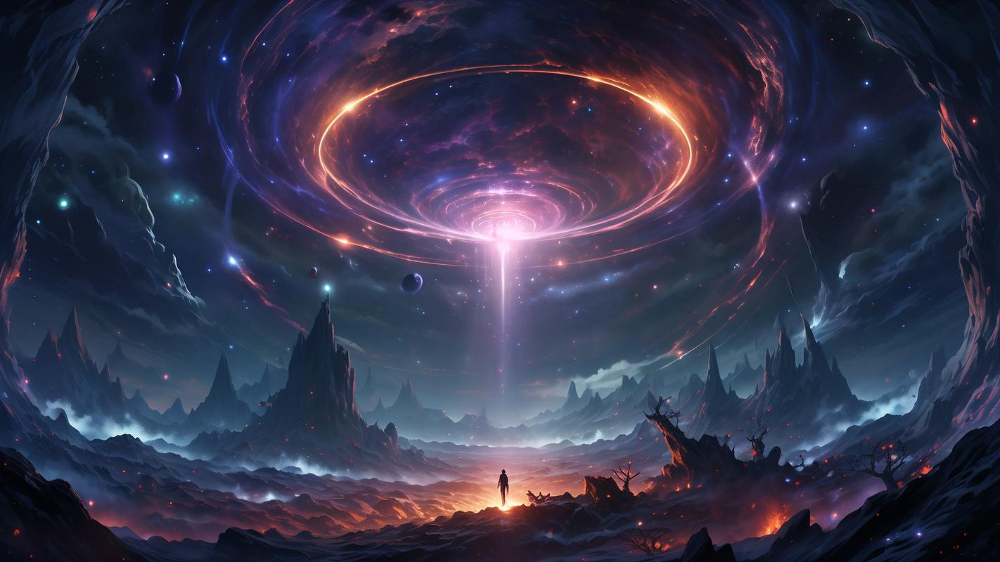
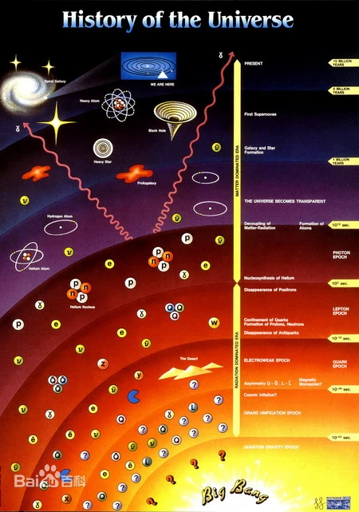
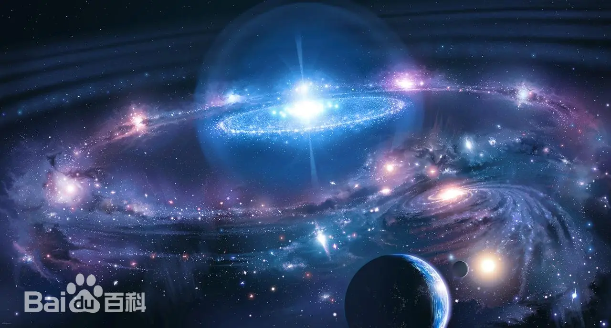
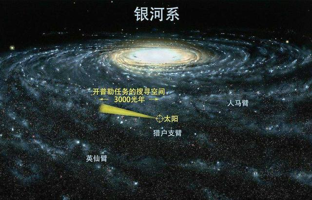
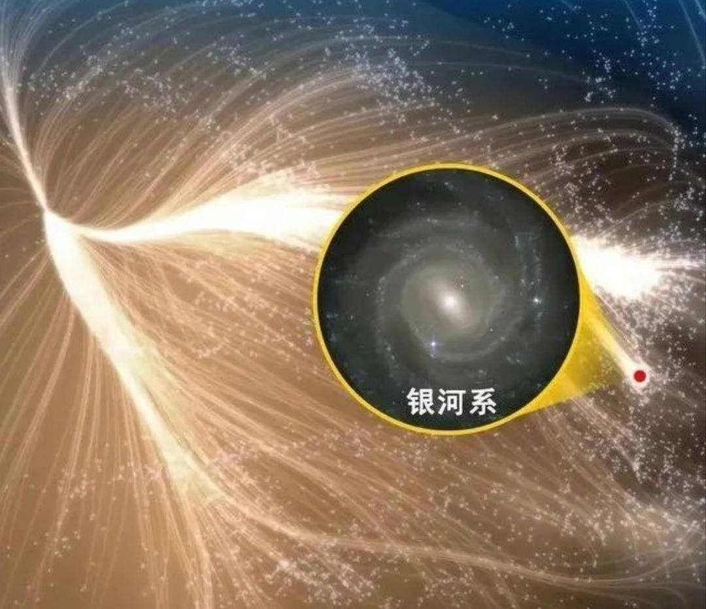
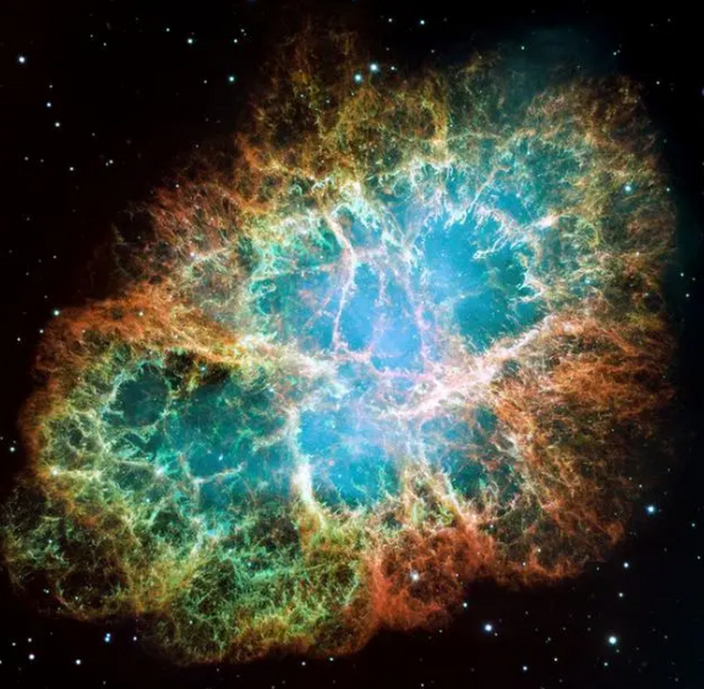

下图返回寝室主页
宇宙的起源

现代宇宙系当中最有影响的一种学说，又称大爆炸宇宙学。大约在137亿年前，宇宙内的所有物质和能量被压缩到一个极小的体积内，形成一个温度极高、密度极大的奇点。随后，这个奇点发生了大爆炸，物质四散出去，宇宙空间不断膨胀，温度逐渐下降，形成了我们现在所看到的星系、恒星、行星乃至生命。
根据大爆炸宇宙学的观点，大爆炸的整个过程是：在宇宙的早期，温度极高，在100亿度以上。物质密度也相当大，整个宇宙体系达到平衡。宇宙间只有中子、质子、电子、光子和中微子等一些基本粒子形态的物质。但是因为整个体系在不断膨胀，结果温度很快下降。当温度降到10亿度左右时，中子开始失去自由存在的条件，它要么发生衰变，要么与质子结合成重氢、氦等元素；化学元素就是从这一时期开始形成的。温度进一步下降到100万度后，早期形成化学元素的过程结束（见元素合成理论）。宇宙间的物质主要是质子、电子、光子和一些比较轻的原子核。当温度降到几千度时，辐射减退，宇宙间主要是气态物质，气体逐渐凝聚成气云，再进一步形成各种各样的恒星体系，成为我们今天看到的宇宙。
宇宙的层次
2500亿颗类似太阳的恒星和星际物质构成更巨大的天体系统——银河系。银河系外还有许多类似的天体，称为河外星系，常简称星系。现已观测到大约有10亿个。星系也聚集成大大小小的集团，叫星系团。平均而言，每个星系团约有百余个星系，直径达上千万光年。现已发现上万个星系团。包括银河系在内约40个星系构成的一个小星系团叫本星系群。若干星系团集聚在一起构成更大、更高一层次的天体系统叫超星系团。超星系团往往具有扁长的外形，其长径可达数亿光年。通常超星系团内只含有几个星系团，只有少数超星系团拥有几十个星系团。本星系群和其附近的约50个星系团构成的超星系团叫做本超星系团。本超星团（超星系团）构成的丝状结构是宇宙中已知的最大结构，一个典型的丝状结构的长度是70至150百万光年，丝状结构与空洞构成长城，空洞指的是丝状结构之间的空间，空洞与丝状结构一起是宇宙组成中最大尺度的结构。空洞中只包含很少或完全不包含任何星系。一个典型的空洞直径大约为11至150个百万秒差距，长城是所知宇宙中被观察到的最巨大非结构，其中史隆长城是所知最长的长城，距离地球约10亿光年，长达13.7亿光年，其次是CFA2长城。天文观测范围已经扩展到200亿光年的广阔空间，它称为总星系。- 
我们的宇宙
- 
我们的宇宙
- 
我们的宇宙
- 
我们的宇宙